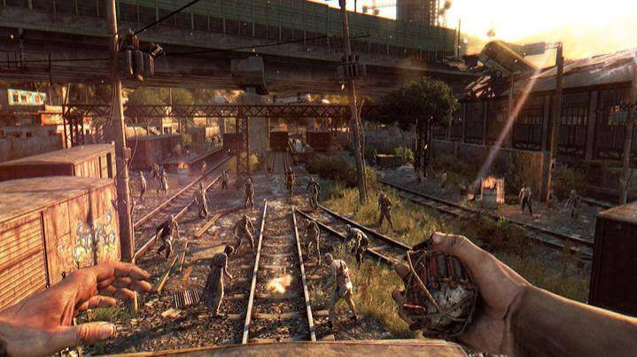
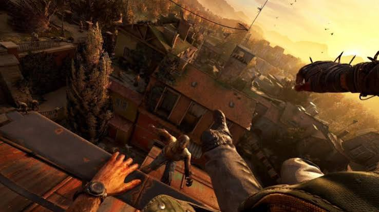
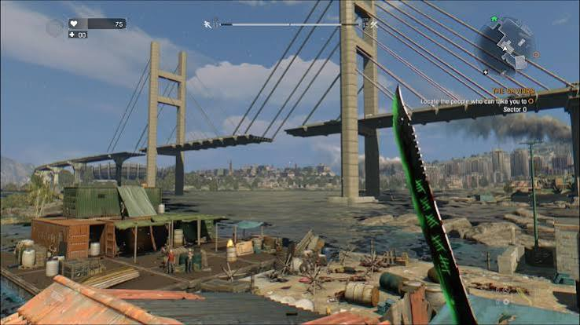

Sở thích của mình
- Dying Light: Mình thích game này vì lối chơi hồi hộp, cơ chế chạy trốn, chiến đấu và khám phá thế giới mở rất cuốn hút.
- Vì sao mình thích: Mỗi lần lên level hay tiến thêm một đoạn, mình cảm thấy rất vui và hứng thú vì game mang lại cảm giác mạo hiểm, kịch tính và sự tập trung cao.
- Vì tôi xem Dũng CT: Mình thích Dũng CT nên cũng bị cuốn theo phong cách, sự mạnh mẽ và cảm giác “điên” của game. Dying Light khiến mình thấy giống một trải nghiệm đáng nhớ và đầy áp lực nhưng rất thú vị.
Hình ảnh


